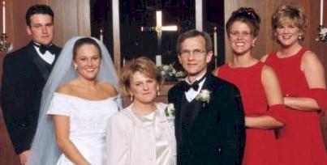
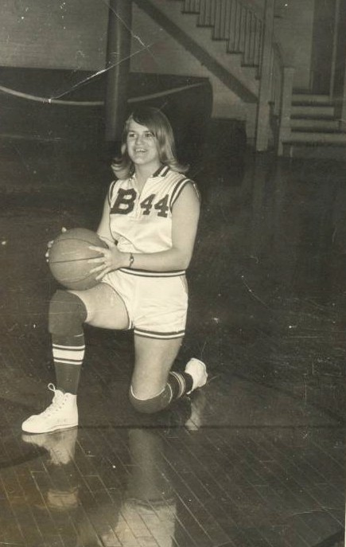

BHS 1967 Class Member
Bonnie (Wilhelm) Beal
Click to Email
Click to Email
 1967 Click for Franklin Elementary Photo |
 DAVID, JENNIFER (MY BABY GETTING MARRIED), MYSELF, DON, STACY AND MICHELLE in 2000 |
|  1967 |
| 1967 Click for Franklin Elementary Photo |
 DAVID, JENNIFER (MY BABY GETTING MARRIED), MYSELF, DON, STACY AND MICHELLE in 2000 |
|  1967 |